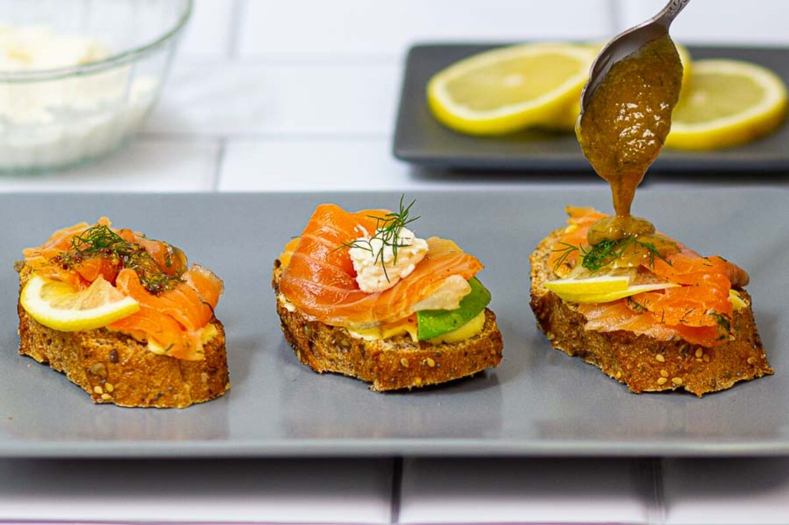

Gravlax
Home

Description
A Nordic dish, also known as graved salmon. The name of the dish comes from the way it was originally made: the freshly caught fish was rubbed with salt, sugar and herbs
and then buried for days to let it cure. Works great as a side dish or on a piece of rye bread. Especially popular at Christmas
Ingredients
- 700g fillet of salmon
- 1.5 tbsp of seasalt
- 1-2 tsp. of sugar
- Dill
Steps
- Place fillet on a chopping board skin down. Remove bones
- Season evenly with salt, sugar and dill
- Wrap the fish tightly in foil/baking paper and cling film
- Place in a fridge and let cure for at least a day. Turn a couple times to ensure even seasoning.
- Remove any excess seasoning from the surface of the fish
- Cut into thin strips